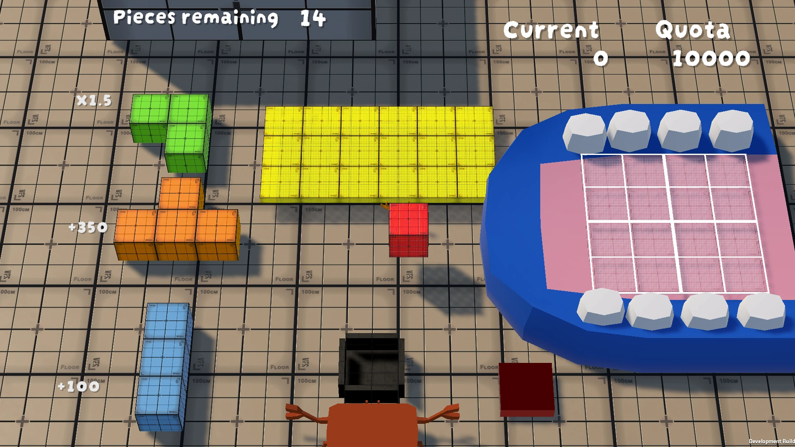
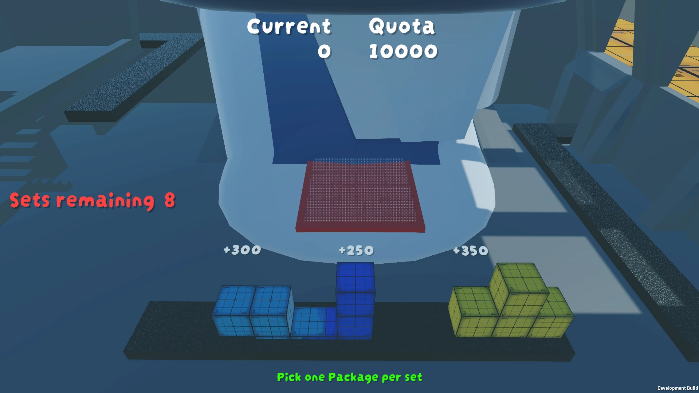
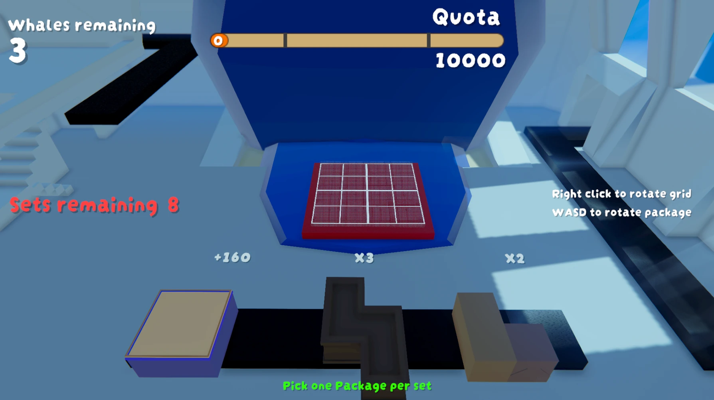
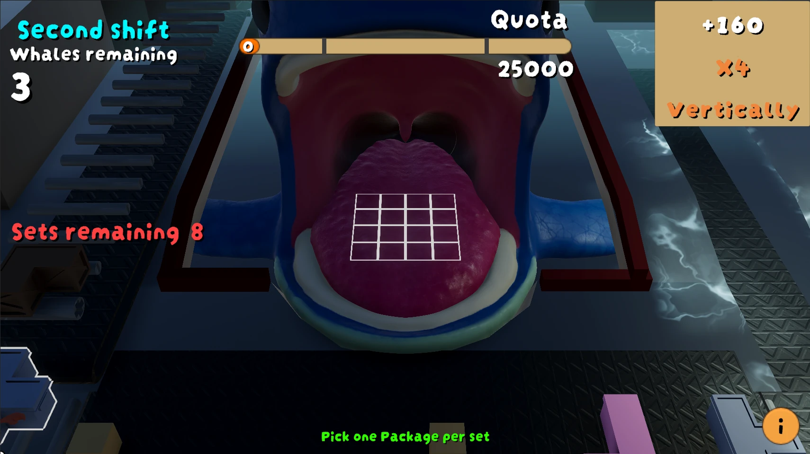

We had four concepts. Lobster Loader was the smallest, and that was exactly why I pushed for it. Our instructors kept emphasizing that a polished game would land better at Pitch & Play than a bigger idea we barely finished. I wanted enough time to tune controls, feedback, readability and presentation instead of spending the whole production just trying to get the core game working.
Make a small game feel exceptionally finished.
Pre-productionMonths 1 to 2 · concept, pillars, prototypes
M1Core placement
M2 / M3Scoring + readability
AlphaOnboarding + polish
Beta / PnPShowcase build



